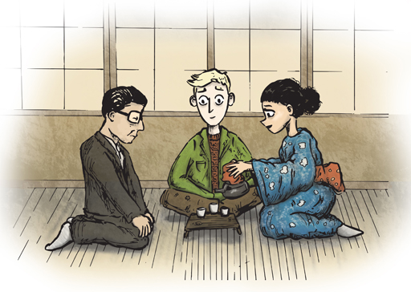

3 Four areas to master¶
As I look back on my own experience of taking a new language from complete beginner to fluency, I can identify four ‘buckets’ that I have needed to become good at, in order to learn with some efficiency and fast-track the process.
Those are:
Linguistic – learning the language itself
Cultural – understanding the culture
Methodological – your language learning method
Self – staying focused and motivated

Figure 2 The four areas to master.
I have experienced both feeling a mastery of, and feeling utterly useless at, each of these four ‘buckets’. These ups and downs have shown me that if any of these go wrong, you will struggle to reach your goals. On the other hand, when you learn to master these elements, you unlock the secret to learning any language quickly.
3.1 Linguistic¶
This is what is most familiar to aspiring language learners – the language itself. You need to master the various elements of that language, from the words it uses, to the order you put them in.
Activity 2 Matching the linguistic elements¶
Timing: Allow about 5 minutes
Question¶
Look at the various linguistic elements of a language. Match each one to its definition.
Grammar
The set of structural rules governing a language.
Pronunciation
The way a word or a language is spoken.
Syntax
The set of rules, principles and processes that govern the structure of sentences in a particular language, specifically word order.
Vocabulary
The set of words you know in a particular language.
Reading
The process of decoding symbols (such as letters) to derive meaning.
Listening
The ability to pay attention to and effectively interpret what is being said, sung, played etc.
Speaking
The ability to utter words or articulate sounds with the voice in order to communicate.
Writing
The process of expressing or communicating something by representing spoken language through the inscription or recording of signs and symbols, traditionally on paper on another such support.
Discussion¶
Learning a language means learning the elements of that language. In the following weeks, you will look in particular at learning vocabulary and at the four language skills of listening, speaking, reading and writing, which you will focus on in Weeks 4–7.
Laura says:¶
I think it is very common as a learner to focus too much on certain elements at the expense of others, simply because they are easier and more in your comfort zone. I think a balanced approach is key, and I have found that the different language elements are interdependent, so, for instance, a good grasp of pronunciation can also aid listening comprehension and so on.
3.2 Cultural¶
If you have ever travelled abroad, you’ll know that the locals do things differently. How differently depends on the country.
The difference might be subtle, such as different meal times from what you’re used to. If you’ve ever travelled to Spain, think for instance about the differences between the UK and Spain.
Box 1 An example¶
I was recently invited by a Spanish friend in London to go for lunch with her and some friends. We didn’t confirm the exact time, and so I blocked off a few hours on my calendar on that day, and arranged to meet another friend afterwards – at 3pm. ‘Even if it’s a relaxed lunch’, I thought, ‘that will leave plenty of time’. The day arrived, and I texted my friend to ask what time we were meeting for lunch. ‘At 3pm’, came the reply. ‘¡Horario español!’ – Spanish time – I had to scramble to rearrange my day! While lunch in the UK usually happens around midday or 1pm, it is an integral part of Spanish culture to eat late. La cena, dinner, can easily begin at 11pm. One can easily imagine the amount of comical misunderstandings that can happen as a result of arranging schedules around meal times. This is a cultural issue, rather than a linguistic one.
While the Spanish example is a fun one, it is not always so light-hearted. Having lived for almost two years in Qatar, an ultra-conservative Muslim state in the Gulf, I have experienced how the cultural misuse of language can have serious consequences.
Let’s look at an example in the middle ground.
When I lived in Tokyo, I quickly learned that Japan is a society governed by conventions – things you are expected to say and do in all manner of situations, from sitting down to eat, to meeting someone new.
Activity 3 Thinking about etiquette¶
Timing: Allow about 30 minutes
Question¶
Read the following: A short guide to Japanese etiquette. As you read it, imagine you are learning Japanese, perhaps because you will be transferred to Japan for work. Although it would be unreasonable for you to learn all the social customs from the start, are there any that you would want to learn as soon as possible? Are there any customs you would come to feel embarrassed to get wrong, as someone who is learning Japanese?

Figure 3 A Japanese tea ceremony.
Discussion¶
While you would probably not be expected to know every rule, and the advice to take your cue from others is usually a safe one, if you were the guest at a meal, you would need to know some basic rules. For instance, you should know about the etiquette for making toasts (as you would be expected to make one), for sitting arrangements (including where and how to sit), for starting to eat (saying itidakimasu, the equivalent to bon appetit) and for thanking your host for a great meal at the end. You should also know not to drink or eat until your Japanese host does. Not knowing both the cultural aspects to basic etiquette, as well as the set phrases expected in such situations, might seem impolite and offend your host.
On the other hand, the tea ceremony ritual is obviously extremely complex in terms of etiquette, and you probably would not be expected to be familiar with all of it. Again, the advice to take your cue from others would work in this setting.
Knowing the etiquette around hygiene is also important (e.g. removing your shoes, never stepping on the genkan but immediately stepping up onto the tatami in order not to bring dirt into the house, wiping your hands (not your face) with the towel provided before you touch any of the food, etc.). After all, if a foreign guest were to do something considered unhygienic in your culture at the dinner table (such as farting or picking their nose), you would find it rather rude!
Finally, to avoid awkward misunderstandings, you should know about the etiquette for paying for meals.
Cultural faux pas may not initially seem to be linked to the language, but you certainly cannot successfully learn a language without also behaving appropriately with its people.
Learning a language means becoming culturally literate.
Laura says:¶
I think knowing the social and cultural conventions of the people whose language you are learning is important, but it is somewhat inevitable that at some point you will encounter hitherto unknown norms of behaviour. One useful strategy I use to minimise any social awkwardness in this context is to learn appropriate phrases of apology or ways to convey that I don’t understand.
3.3 Methodological¶
You have already noted that learning a language means learning the words, phrases, grammar and so on, but how? How do you memorise the vocabulary, master the grammar or learn to understand native speakers?
When I first started learning languages on my own, aged 19, the only experience I had was that of my language classes at school. As a student, I wasn’t particularly interested in languages and didn’t have a very positive learning experience. In French class, we would practise giving directions to the station ad infinitum. For homework, we would have a list of ten French words to memorise.
When I suddenly discovered a desire to learn languages as an adult, the only way I knew how was to get a textbook and start memorising words. Needless to say, I didn’t learn much at first.
Over the years, as I learned more languages, I began to notice new things that worked – often discovering them by accident. When I trained as a language teacher, I discovered many formal language teaching methodologies, such as the Audio-Lingual Method and the Communicative Approach.
The kind of questions I began to ask and answer are:
Which activities are most effective?
Should I study by myself or find a teacher?
How should my method change as I become more proficient?
Does watching movies help?
I noticed that, as I became a better language learner, I developed certain skills:
Self-monitoring (DeKeyser, 2007) – being able to identify my own strengths and weaknesses as a speaker of a foreign language without relying on someone to point them out to me
Noticing (Schmidt, 1990) – being able to read or listen to the language I was learning and notice important features, enabling me to improve independently
Obtaining feedback (Little and Ushioda,1998) – seeking out people, such as language exchange partners, who could give me feedback on my speaking. For example, by correcting what I say or answering my questions.
These days, I have all but stopped following any one method, and simply learn languages in the way I have realised are most effective – at least for me.
And it’s that last bit that’s key: For me.
There are many ways to learn a language, and your goal should be to figure out what works for you personally. The key to becoming a successful language learner and developing the ability to learn languages quickly is to discover how you learn best.
Learning a language means discovering how you learn best.
3.4 Self¶
As if there wasn’t already enough to learn, you also have to be in control of yourself. Focus, discipline, motivation, emotions: these factors all govern whether or not you turn up and study in the first place.
The perfect method, a great textbook or the world’s best teacher, are of no help to you if you’re not disciplined enough to study every day or if you feel too anxious to practise speaking with people.
On the other hand, if you remain focused, and work at it day after day, you will struggle not to make progress.
All of this, of course, is easier said than done. Until you have the experience of learning a language, you will be at the mercy of your surroundings, for better or for worse. When you are more experienced, you can learn to create your own conditions to help you learn more effectively, wherever you live in the world.
Box 2 An example¶
When I learned Spanish, I was living in the UK. I became good friends with a Spanish speaker and decided to take the opportunity to learn Spanish. We were studying at the same university and spent a lot of time together. Without having to study particularly hard, I was able to become fairly fluent in Spanish over the course of a year, simply by speaking it every day. (Luckily, my motivation to learn Spanish turned out to be stronger than my friend’s motivation to learn English.) It was the ideal language learning environment, possibly even better than moving to Spain.
Many years later, I moved to Japan. Japanese was the first Asian language I had learned and it proved to be far harder than I expected. I struggled to make friends who would speak to me in Japanese and my progress in the language was slow at best. In spite of living in the country itself – in theory an ideal language learning environment – I found myself becoming demotivated and losing the will to study by myself. Overcoming this obstacle was one of my biggest language learning challenges. However, the experience of coming through it and successfully learning Japanese gave me the tools necessary for me to now engineer a good language-learning environment wherever I am in the world.
Learning a language is a big task. Comparable to writing a novel, perhaps, it is an undertaking that many people will find it hard to see through due to the amount of time required to stay motivated and stick at it – and that’s assuming you know how to do it in the first place.
Skills such as time management, overcoming the fear of speaking and dealing with negative experiences are not unique to language learning, but they affect is hugely.
You will look at these in more detail in the forthcoming weeks.
Activity 4 Reflecting on previous successful challenges¶
Timing: Allow about 20 minutes
Question¶
Think about the last time you successfully completed a big task, e.g. passing a driving test, submitting your tax return, reading a hard book, perhaps for your studies. How did you control your environment to help you successfully complete the task? Did you struggle with anything? What?
Discussion¶
Motivation, self-discipline and focus are perhaps not what you were expecting from a course on learning languages. However, hopefully you can see from these examples how they have the power to make the difference between success and failure, and learning to be in control of your environment is perhaps the ultimate secret weapon!
Laura says:¶
Too often, people seem to think that, to learn a language, you have to have some secret inner talent that is unobtainable to most ‘normal’ folk. Thinking of language learning in the same way as other goals in life that require persistence and dedication makes it seem more attainable. You don’t have to be a genius to learn a language. You just need perseverance and commitment.
Learning a language means working hard, staying disciplined and being in control of yourself and your environment. The work you did in Week 1 to identify your SMART goals but also to reflect on the potential barriers to your learning and the strategies to address them should enable you to stay focused and motivated.